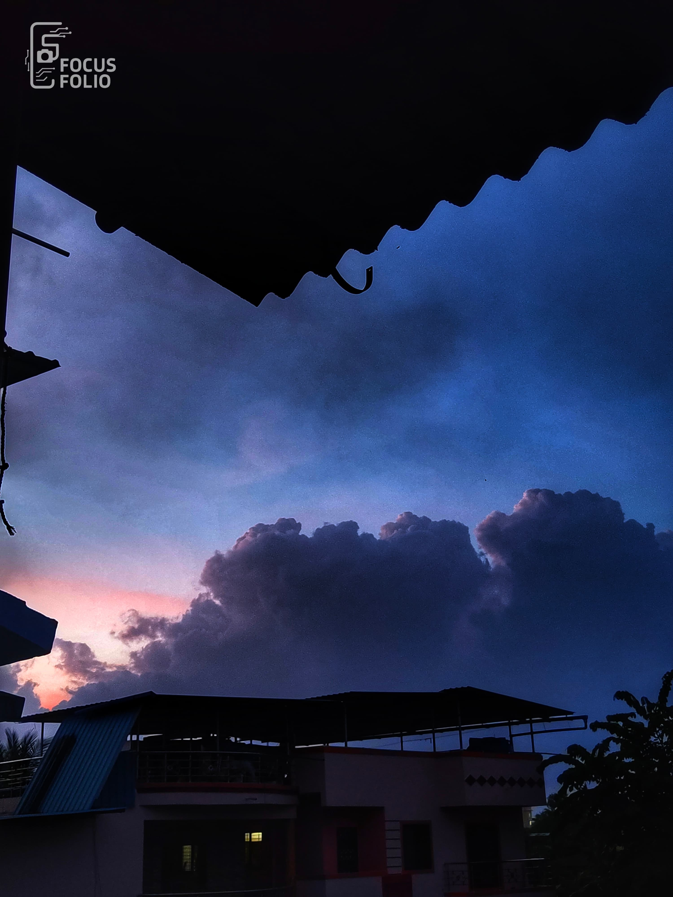
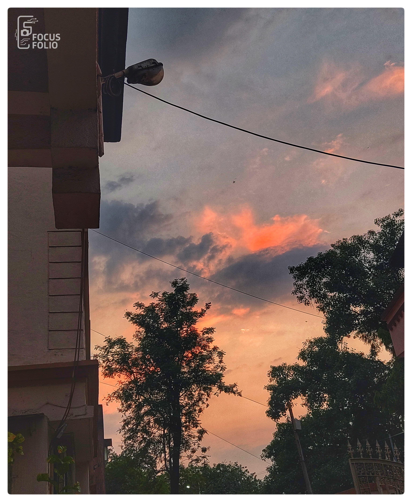
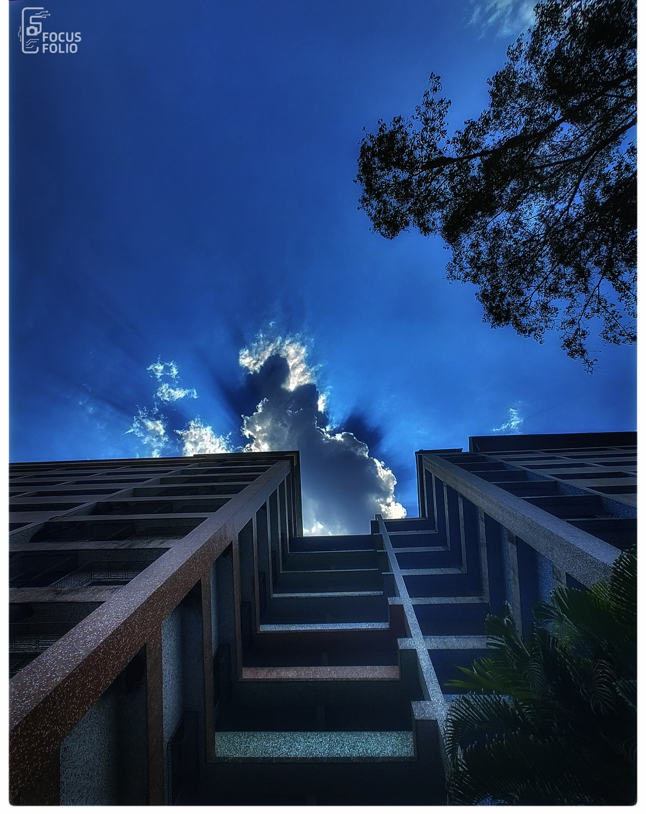
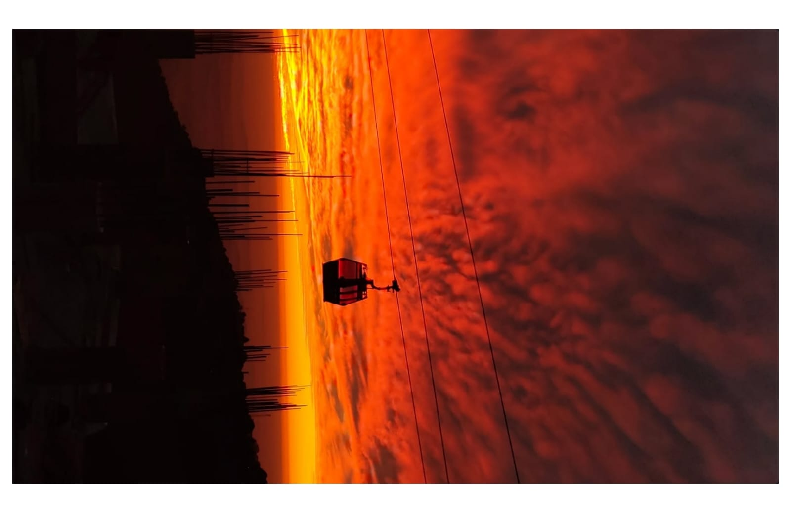
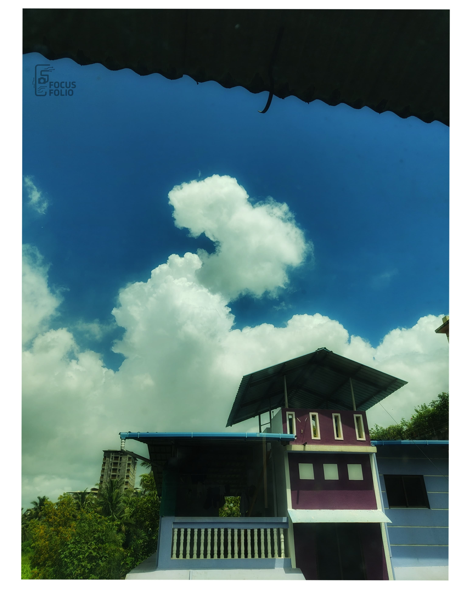
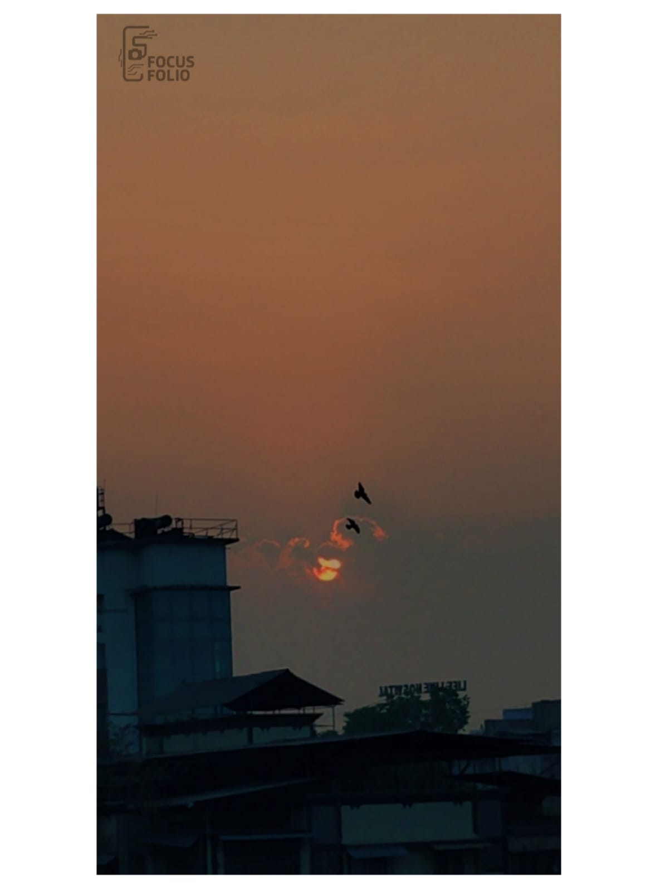

Twilight Tranquility – The Sky Before Sleep

Cotton Haze – Dusky Dreams in Motion

Golden Drift – Sunset Whispers to the Wind

Sky Ascent – Stairs to the Light Beyond

Crimson Skies – Fire Painted on the Horizon

Peace Above – Clouds Watching Over Home
Divine Rays – Heaven Peeking Through the Clouds

Evening Ember – A Kite in the Flame of Sunset
Golden Drift – Sunset Whispers to the Wind